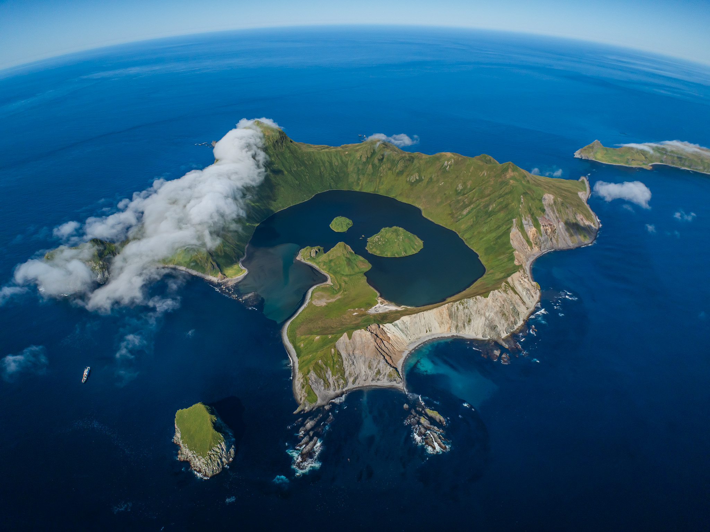
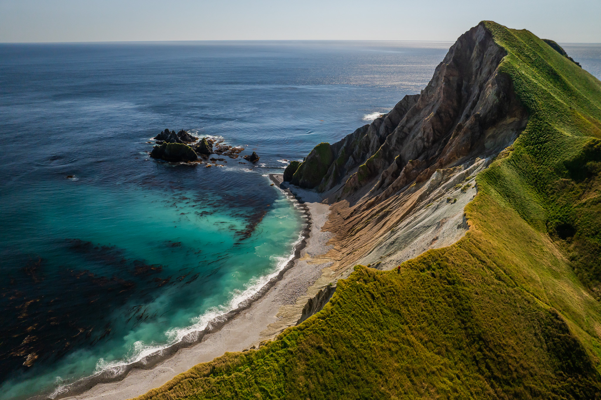
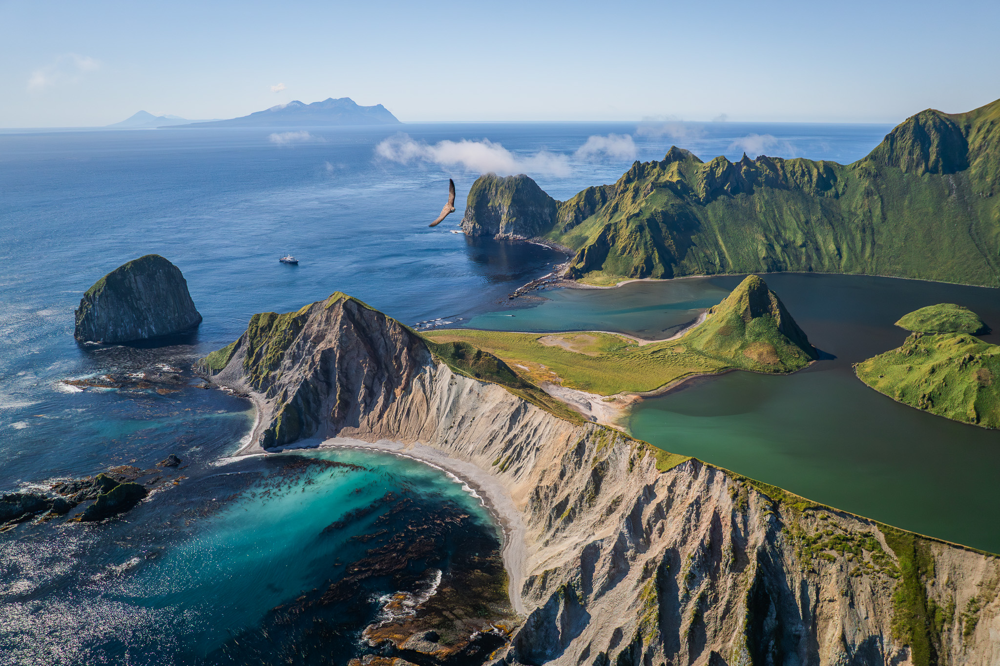
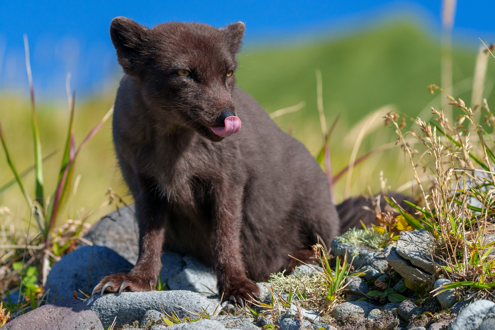

Остров Янкича — Бухта Кратерная
Мы отправляемся к сердцу Курильских островов — острову Янкича.
Это невероятно красивая земля, которая сохранила свою природу от начала времен. Мы зайдем в бухту Кратерную, которая представляет из себя затопленную кальдеру вулкана. Прогуляемся у горячих источников, испускающих пар, и понаблюдаем за песцами, которые совершенно не боятся человека. У нас будет время исследовать остров и подняться повыше, чтобы увидеть всю красоту своими глазами.




Что вас ждет
- Прогулка на моторной лодке по бухте Кратерной
- Наблюдение за песцами в их естественной среде
- Высадка на остров и восхождение на вторичные вулканические конуса для панорамных видов
- Исследование фумарол и термальных полей